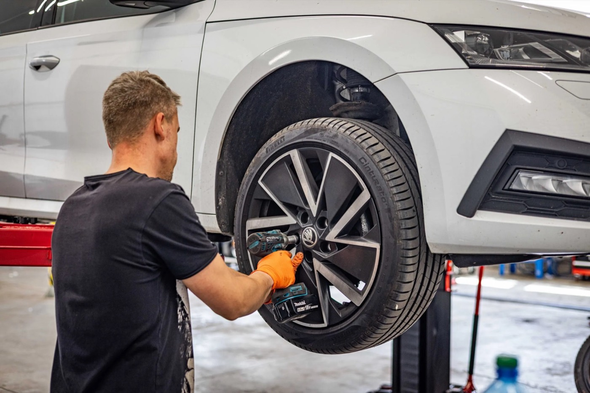
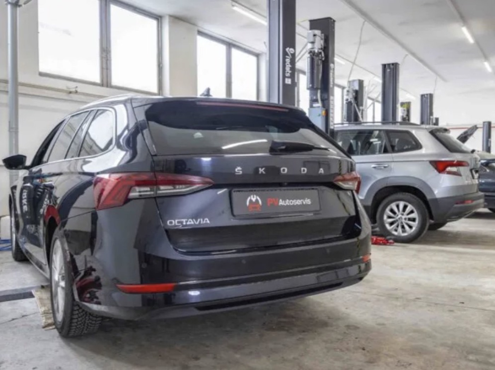
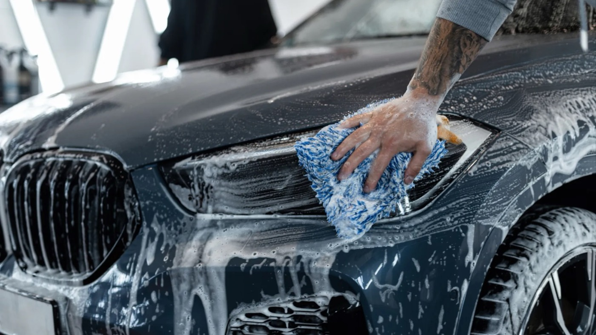

Rady
a akcie.
Tipy na údržbu auta, sezónne ponuky a novinky z dielne.

Akcia do 31. 10.
Kontrola vozidla za 50 €. Pri oprave u nás ju máte zadarmo.
Ak bude auto v poriadku, dostanete voucher 50 € na ďalšie služby.
Čítať článok
5 dôvodov, prečo si dať skontrolovať geometriu vozidla

Jarná údržba auta: 5 krokov, ktoré by ste nemali zanedbať

Autoservis na splátky s 0 % úrokom a bez navýšenia

Parkujete auto vonku? Toto si po zime dajte skontrolovať
Prečo meniť všetky filtre pri výmene oleja?
